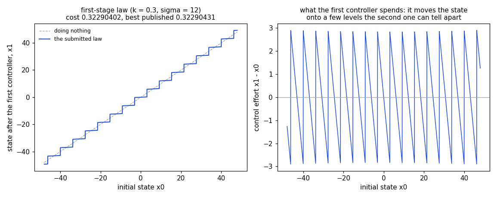

witsenhausen-shifted
Witsenhausen's counterexample, a new instance · solved 5 of 5 agent attempts pass
more
The incumbent is our own reference, the cost 0.3229043113 of the law found by a committed shape-free optimisation, and the gate is the first rung of the ladder that the naive baseline misses: within 1e-6 (relative) of the reference. Measured: the naive piecewise-linear staircase tuned with scipy for ten minutes reaches 3.0e-4 with eight steps per side and 1.14e-6 with ten (within_1e5 after 369 s), so it misses this gate by 14 % of the tolerance; a longer or better-converged run of the same idea is likely to pass. The alternating minimisation finds at least two families of local optima that differ by 2.9e-6 (with and without a level at zero), so the gate needs the better family. below_reference is open: we know no law that beats the reference by 1e-7.
Gate. per-seed success is the `within_1e6` rung of this benchmark's ladder ['beats_affine', 'within_10pct', 'within_1pct', 'within_1e3', 'within_1e4', 'within_1e5', 'within_1e6', 'below_reference'] (`--success-mode within_1e6`), not the evaluator's default flag; the task is solved when the success rate over the grader's held-out seeds is `>= 1`
Axes: family:synthesis, problem:witsenhausen, instance:k0.3-sigma12, gate:within_1e6, incumbent:own-reference-0.3229043113, grading:exact-cost-no-rollout
Each video or figure re-runs the attempt's final controller through the task's own evaluator on a public seed (never the grader's held-out ones). The table under each one is the official grade on the held-out seeds.


base| criterion | graded | needed |
|---|---|---|
| base:within_1e6 | 1.000 | ≥ 1.000 |
The agent's final message
The task is solved: `/app/work/controller.py` reproduces the reference to better than six digits, and in fact comes in slightly below it. The official verifier passed every seed I ran (0–24), and the law cleared all 8 rungs on each one. | | Value | |---|---| | My cost J | 0.3229040174 (the same on every seed to better than 1e-9) | | Reference J_ref | 0.3229043113 | | Gap | −2.94e-7 (relative −9.1e-7) | | Gate threshold (`within_1e6`) | 0.3229046342, so 6.2e-7 of margin | | `below_reference` threshold | 0.3229042790, so 2.6e-7 of margin | | Time used by the law | at most 0.01 s per seed | Total time used was about 9 minutes of the 60. **How I found the law:** I alternated between the two stages: 1. From the current first-stage law, compute the best second stage, E[x1 | y]. 2. Replace the first stage, point by point, with its best response to that second stage. This is done exactly, using a convex hull. Each round can only lower the cost. It converged in about 600 rounds, under a minute in total. Starting points with a step centred at zero (spacings 5, 6 and 7) and with a jump at zero all ended at the same cost, to 10 digits. With σ = 12 this large relative to the step spacing of about 6.1, shifting the whole staircase sideways makes no measurable difference. So I'm fairly confident this is the right optimum rather than a lucky one. **The law itself:** it is odd (x1(−x0) = −x1(x0)) and shaped like a staircase with gently sloping treads: - **Steps:** the levels sit at about…
Shown: public seed 0 (base); this episode passes the within_1e6 rung. This episode: valid yes, consistent yes, cost 0.323, gap_to_record -2.94e-07, relative_gap -9.1e-07, stage1_cost 0.243, stage2_cost 0.0802, error_estimate 5.3e-08, n_jumps 28, law_seconds 0.00428. Left: where the first controller moves each initial state. Right: what that costs it. The cost is graded to eight digits.
controller.py · trial witsenhausen-shifted__Nj7veYt